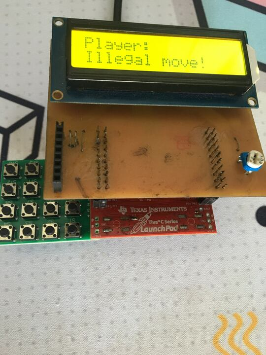

Phân tích và ứng dụng
ngôn ngữ lập trình Rust
cho hệ thống nhúng
SVTH: Vũ Đăng Khoa - 1611645
TP. Hồ Chí Minh, tháng 8/2021
Nội dung
1) Giới thiệu về Rust
2) Những ý tưởng mới của Rust
3) Hệ sinh thái lập trình nhúng của Rust
4) Demo các kết quả đạt được
5) Kết luận và thảo luận
Giới thiệu về Rust
Tổng quan về Rust
- Sáng lập bởi Mozilla
- Ra mắt phiên bản 1.0 chính thức vào tháng 5/2015
- "Fast, reliable, productive - Pick three"
- "Fearless concurrency"
- Ngôn ngữ mã nguồn mở, phát triển nhờ cộng đồng
Các tính năng của của Rust
- Compiled language (machine code)
- Strong static typing
- Không có Garbage Collector, minimal runtime
- Hệ thống kiểu hoàn chỉnh và công phu [*]
So sánh Rust với C/C++
- "Memory safe"
- Không segmentation fault
- Không overflow/underflow
- Không null pointers
- Không datarace (vẫn có thể deadlock)
- Hệ thống kiểu tốt hơn
- Hệ thống quản lý Cargo hiện đại
Những ý tưởng mới của Rust

Ý tưởng mới #1
Loại bỏ dangling pointers (*)
Các tham chiếu (references) bắt buộc luôn có hiệu lực
Dangling pointer
C++
Rust
C++
Rust
Ý tưởng mới #2
Tham chiếu có thể thay đổi (mutable reference) luôn là độc nhất.
Không thể có mutable alias.
Mutable aliasing
C++
Rust
Rust
Lỗi ngăn chặn được
C++
Rust
Ý tưởng mới #3
Thay đổi dữ liệu có kiểu không có thuộc tính Copy đều là move.
move là destructive bitwise copy.
Tất cả các loại data đều có thể move.
Move một chuỗi (string)
C++
ba string destructors
ba string destructors
Rust
một string destructor
một string destructor
Đọc dữ liệu đã bị move
C++
s1 == ""
s1 == ""
Rust
Tradeoffs
C++
- Các kiểu thuộc loại immovable có được hỗ trợ
- Mutex trong C++ không cần heap allocation. Mutex của Rust cần phải có heap allocation.
Rust
- Tất cả loại dữ liệu đều có thể move
- Vec trong Rust có thể lớn lên hay thay đổi giá trị sử dụng memmove.
Hệ sinh thái nhúng của Rust
Điều khiển một vi điều khiển
- Thông qua các register trên vi điều khiển
- Các register này thường là memory mapped
- Các thông số register có thể lấy được từ datasheet
Điều khiển thông qua register
C++
Sử dụng register để điều khiển
- Rất khó viết
- Rất dễ bị sai, lỗi
- Phải đọc datasheet để lấy các số liệu register
Giải quyết vấn đề register (C++)
Các thư viện abstract được cung cấp sẵn bởi nhà sản xuất vi điều khiển (như TivaWare).
Giải quyết vấn đề register (Rust)
1) Peripheral Access Crate (PAC)
2) Hardware Abstraction Layer (HAL)
3) Driver crate
4) Embedded HAL
5) no-std crates
6) Board Support Crate
Peripheral Access Crate (PAC)
- Bắt nguồn từ file SVD
- PAC được tự động tạo ra bởi svd2rust
- Kết quả đạt được là một thư viện tương đối an toàn và dễ sử dụng hơn
- Được hưởng lợi từ hệ thống ownership của Rust
Code sử dụng PAC
Hardware Abstraction Layer (HAL)
HAL là một interface cấp cao hơn, được viết dựa vào PAC và datasheet.
Code sử dụng HAL
- An toàn
- Dễ sử dụng
- Trường hợp đơn giản có thể không cần đọc datasheet!
HAL cho các thiết bị ngoài
Một số vấn đề với PAC và HAL
- Không được cung cấp bởi nhà sản xuất
- HAL được viết thủ công
- Chất lượng các HAL tùy thuộc vào người viết
-
Các HAL không tương thích với nhau
-
Các HAL driver cho thiết bị ngoài phải được viết cho từng HAL vi điều khiển khác nhau
Embedded HAL
- Thuộc tính chung, phổ biến: GPIO, Timer, SPI, UART, v.v..
- Embedded HAL định nghĩa các thuộc tính này
- HAL của vi điều khiển và HAL của driver thực hiện viết HAL sử dụng các thuộc tính chung này
Kết quả: Toàn bộ các HAL đều tương thích với nhau
Ví dụ về Embedded HAL
HAL driver cho AHT20 tái sử dụng hai thuộc tính định nghĩa sẵn từ Embedded HAL là delay và i2c
no-std crates
Board Support Crate
Vi điều khiển phổ biến như STM32F4DISCOVERY được viết thêm 1 lớp abstraction cao hơn HAL riêng cho các vi điều khiển này stm32f407g-disc.
Ứng dụng Rust
EK-TM4C123GH6PM
Demo các kết quả đạt được
1) Chương trình nháy LED
2) Sử dụng các ngoại vi đơn giản
3) Tương tác với một vài thiết bị ngoài
4) Sử dụng crate no-std thực hiện giải thuật cờ vua trên kit
5) Sử dụng crate RTIC thực hiện hệ thống real time sử dụng ngắt
LED Blinky
Tương tác ngoại vi trên kit
Tương tác một số thiết bị ngoài
Giải thuật cờ vua đơn giản

Kết luận
- Rust đạt được các tiêu chí đề ra ban đầu và hơn thế
- Rust ngày càng được sử dụng nhiều hơn trong các công ty, tập đoàn lớn (Google, Microsoft, Amazon, v.v..)
- Hệ sinh thái nhúng của Rust còn non nớt nhưng đủ để thực hiện một số hệ thống từ đơn giản đến phức tạp